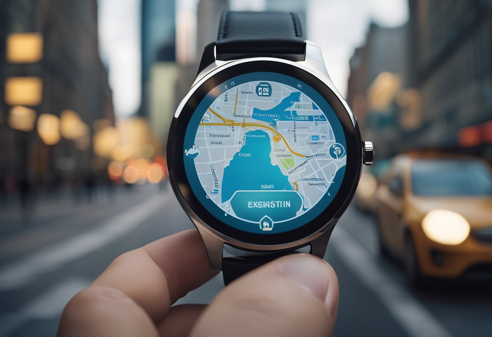
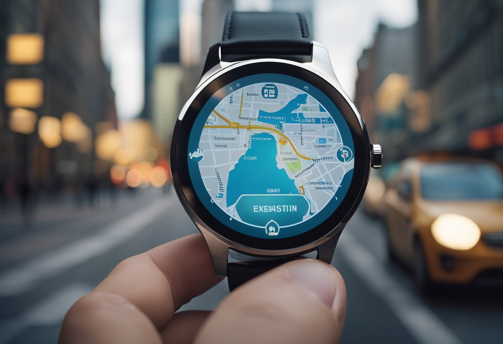

Welcome to the blog of Times
 

Exploring the impact of technology on the watch industry and consumer trends.
The smart watch and smartphone have finnaly achieved a sumbiotic realtionship, with devices like the Apple Watch and Samsung Galaxy delivering notifications, calls, and apps right on the wrist.
Health and Fitness Monitoring: These gadgets have features like a heart-rate monitoring, sleep tracker, and step counter. Little wonder, therefore, tehat the latest health and fitness smartwatches become the best gadgets for health enthusiasts
The ability to change watch faces and dtraps to one's own taste or those redommended by a stylist.
E-comerce and online Sales.
The watch industry is also becoming increasingly popular among women, with women's brands like G-Shine, Meizu, and Garmin offering smartwatches to women.
Online Marketplaces: this includes Amazon, eBay, and others
selling timepieces and accessories; they have all streamlined
the process that a customer goes through before they purchase
a watch to something as easy as a mouse click.
Virtual Try-Ons: Augmented Reality technology gives
consumers an opportunity to try a watch on virtually through
their smartphones and, therefore, enhances their shopping
experience.
Wearable Technology: In the market of wearable technology
it also uses breakthrough materials such as ceramics, carbon
fibers, and titanium for a lightweight and sturdy quality to the
product.
Solar Power and Kinetic Energy:
Now, some brands of watches operate on solar power or kinetic
energy and hence do not call for changing batteries, making
them important to green consumers.
Data and Analytics:
Insight on the Consumer: By using Data Analytics, brands are
gaining insights into the choices and behavior of the customer,
hence providing the right product for the market need
Personalized Marketing: In this regard, digital marketing
harmonizes with all these technologies through customer
behavior and preferences to inform right marketing strategies.